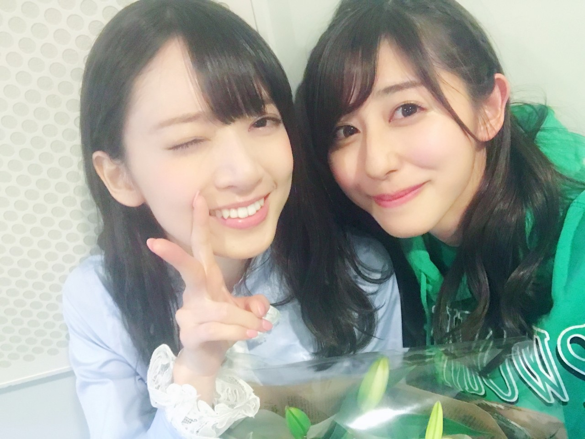

| 2017/02 20 Mon | 斎藤ちはる ないものねだり |
ちはるーむへようこそ
今日は5th Birthday LIVE、そして
ななみんの卒業コンサートでした。
来てくださった皆さん本当に
ありがとうございました！！
随分時間遅くなってしまいましたが
皆さん大丈夫だったでしょうか(> <)
平日のお疲れのところ恐縮です(> <)
私達も今日が最終日なんじゃないか
というくらいに燃え尽きました！笑
踊り、歌い、走り、笑い、泣き。
沢山のエネルギーを使いました☺︎☺︎
楽しかったな(﹡ˆ ˆ﹡)
そしてななみん。
5年半お疲れ様、そしてありがとう。
ななみんの強さ、笑顔、優しさに
ずっと支えられていました。
そして憧れの存在。
今も昔も変わらずに。
そしてこれからも憧れの存在。
ななみんのような人になりたいな☺︎
ご飯連れてって〜って行ったら
行こうね！って言ってくれたので
これからも会えると思ったら
凄い嬉しい気持ちになる(﹡ˆ ˆ﹡)

ななみんウインク。
大好き！！！
------------------------------------------------♡
♬ ChihaMusic
「ないものねだり」乃木坂46
今日は絶対この曲だって決めていた。
この曲は大好きで、
いつもはずっと裏で歌ってたんだけど
今日は裏で歌えなかった。
最後のないものねだりだと思うと
涙が溢れてきちゃって。
ななみんの声と涙声が素敵だった。
"なぜ 人は誰も 目の前にある
その幸せだけで 今日を生きられないの？"
ってところに凄い考えさせられる。
深いなぁ。
ななみんがこの曲歌うからこそ余計に深い。
この三日間のブログは
少し短いとは思いますが...
お付き合いください( ¨̮ )
明日も朝早くから頑張ってきます！！
今日とは全く違うセトリ。
皆さん楽しみにしていてください♡
おやすみ
斎藤ちはる